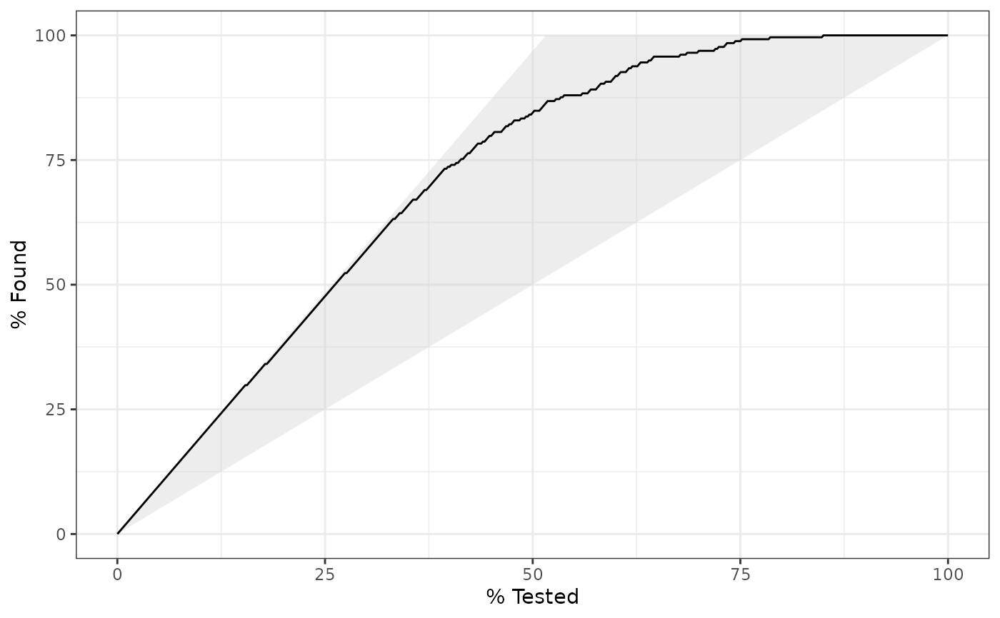

gain_capture() is a measure of performance similar to an AUC calculation,
but applied to a gain curve.
Usage
gain_capture(data, ...)
# S3 method for class 'data.frame'
gain_capture(
data,
truth,
...,
estimator = NULL,
na_rm = TRUE,
event_level = yardstick_event_level(),
case_weights = NULL
)
gain_capture_vec(
truth,
estimate,
estimator = NULL,
na_rm = TRUE,
event_level = yardstick_event_level(),
case_weights = NULL,
...
)Arguments
- data
A
data.framecontaining the columns specified bytruthand....- ...
A set of unquoted column names or one or more
dplyrselector functions to choose which variables contain the class probabilities. Iftruthis binary, only 1 column should be selected, and it should correspond to the value ofevent_level. Otherwise, there should be as many columns as factor levels oftruthand the ordering of the columns should be the same as the factor levels oftruth.- truth
The column identifier for the true class results (that is a
factor). This should be an unquoted column name although this argument is passed by expression and supports quasiquotation (you can unquote column names). For_vec()functions, afactorvector.- estimator
One of
"binary","macro", or"macro_weighted"to specify the type of averaging to be done."binary"is only relevant for the two class case. The other two are general methods for calculating multiclass metrics. The default will automatically choose"binary"or"macro"based ontruth.- na_rm
A
logicalvalue indicating whetherNAvalues should be stripped before the computation proceeds.- event_level
A single string. Either
"first"or"second"to specify which level oftruthto consider as the "event". This argument is only applicable whenestimator = "binary". The default uses an internal helper that defaults to"first".- case_weights
The optional column identifier for case weights. This should be an unquoted column name that evaluates to a numeric column in
data. For_vec()functions, a numeric vector,hardhat::importance_weights(), orhardhat::frequency_weights().- estimate
If
truthis binary, a numeric vector of class probabilities corresponding to the "relevant" class. Otherwise, a matrix with as many columns as factor levels oftruth. It is assumed that these are in the same order as the levels oftruth.
Value
A tibble with columns .metric, .estimator,
and .estimate and 1 row of values.
For grouped data frames, the number of rows returned will be the same as the number of groups.
For gain_capture_vec(), a single numeric value (or NA).
Details
gain_capture() calculates the area under the gain curve, but above
the baseline, and then divides that by the area under a perfect gain curve,
but above the baseline. It is meant to represent the amount of potential
gain "captured" by the model.
The gain_capture() metric is identical to the accuracy ratio (AR), which
is also sometimes called the gini coefficient. These two are generally
calculated on a cumulative accuracy profile curve, but this is the same as
a gain curve. See the Engelmann reference for more information.
Relevant Level
There is no common convention on which factor level should
automatically be considered the "event" or "positive" result
when computing binary classification metrics. In yardstick, the default
is to use the first level. To alter this, change the argument
event_level to "second" to consider the last level of the factor the
level of interest. For multiclass extensions involving one-vs-all
comparisons (such as macro averaging), this option is ignored and
the "one" level is always the relevant result.
Multiclass
Macro and macro-weighted averaging is available for this metric.
The default is to select macro averaging if a truth factor with more
than 2 levels is provided. Otherwise, a standard binary calculation is done.
See vignette("multiclass", "yardstick") for more information.
References
Engelmann, Bernd & Hayden, Evelyn & Tasche, Dirk (2003). "Measuring the Discriminative Power of Rating Systems," Discussion Paper Series 2: Banking and Financial Studies 2003,01, Deutsche Bundesbank.
See also
gain_curve() to compute the full gain curve.
Other class probability metrics:
average_precision(),
brier_class(),
classification_cost(),
mn_log_loss(),
pr_auc(),
ranked_prob_score(),
roc_auc(),
roc_aunp(),
roc_aunu()
Examples
# ---------------------------------------------------------------------------
# Two class example
# `truth` is a 2 level factor. The first level is `"Class1"`, which is the
# "event of interest" by default in yardstick. See the Relevant Level
# section above.
data(two_class_example)
# Binary metrics using class probabilities take a factor `truth` column,
# and a single class probability column containing the probabilities of
# the event of interest. Here, since `"Class1"` is the first level of
# `"truth"`, it is the event of interest and we pass in probabilities for it.
gain_capture(two_class_example, truth, Class1)
#> # A tibble: 1 × 3
#> .metric .estimator .estimate
#> <chr> <chr> <dbl>
#> 1 gain_capture binary 0.879
# ---------------------------------------------------------------------------
# Multiclass example
# `obs` is a 4 level factor. The first level is `"VF"`, which is the
# "event of interest" by default in yardstick. See the Relevant Level
# section above.
data(hpc_cv)
# You can use the col1:colN tidyselect syntax
library(dplyr)
hpc_cv %>%
filter(Resample == "Fold01") %>%
gain_capture(obs, VF:L)
#> # A tibble: 1 × 3
#> .metric .estimator .estimate
#> <chr> <chr> <dbl>
#> 1 gain_capture macro 0.743
# Change the first level of `obs` from `"VF"` to `"M"` to alter the
# event of interest. The class probability columns should be supplied
# in the same order as the levels.
hpc_cv %>%
filter(Resample == "Fold01") %>%
mutate(obs = relevel(obs, "M")) %>%
gain_capture(obs, M, VF:L)
#> # A tibble: 1 × 3
#> .metric .estimator .estimate
#> <chr> <chr> <dbl>
#> 1 gain_capture macro 0.743
# Groups are respected
hpc_cv %>%
group_by(Resample) %>%
gain_capture(obs, VF:L)
#> # A tibble: 10 × 4
#> Resample .metric .estimator .estimate
#> <chr> <chr> <chr> <dbl>
#> 1 Fold01 gain_capture macro 0.743
#> 2 Fold02 gain_capture macro 0.727
#> 3 Fold03 gain_capture macro 0.796
#> 4 Fold04 gain_capture macro 0.748
#> 5 Fold05 gain_capture macro 0.730
#> 6 Fold06 gain_capture macro 0.754
#> 7 Fold07 gain_capture macro 0.730
#> 8 Fold08 gain_capture macro 0.747
#> 9 Fold09 gain_capture macro 0.710
#> 10 Fold10 gain_capture macro 0.731
# Weighted macro averaging
hpc_cv %>%
group_by(Resample) %>%
gain_capture(obs, VF:L, estimator = "macro_weighted")
#> # A tibble: 10 × 4
#> Resample .metric .estimator .estimate
#> <chr> <chr> <chr> <dbl>
#> 1 Fold01 gain_capture macro_weighted 0.759
#> 2 Fold02 gain_capture macro_weighted 0.745
#> 3 Fold03 gain_capture macro_weighted 0.811
#> 4 Fold04 gain_capture macro_weighted 0.734
#> 5 Fold05 gain_capture macro_weighted 0.733
#> 6 Fold06 gain_capture macro_weighted 0.730
#> 7 Fold07 gain_capture macro_weighted 0.737
#> 8 Fold08 gain_capture macro_weighted 0.730
#> 9 Fold09 gain_capture macro_weighted 0.681
#> 10 Fold10 gain_capture macro_weighted 0.737
# Vector version
# Supply a matrix of class probabilities
fold1 <- hpc_cv %>%
filter(Resample == "Fold01")
gain_capture_vec(
truth = fold1$obs,
matrix(
c(fold1$VF, fold1$F, fold1$M, fold1$L),
ncol = 4
)
)
#> [1] 0.7428922
# ---------------------------------------------------------------------------
# Visualize gain_capture()
# Visually, this represents the area under the black curve, but above the
# 45 degree line, divided by the area of the shaded triangle.
library(ggplot2)
autoplot(gain_curve(two_class_example, truth, Class1))
